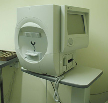
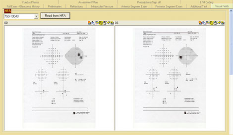

Humphrey analyzer
* Định nghĩa:
+ Máy phân tích thị trường Humphrey


Hình: Máy Humphrey và kết quả phân tích
+ Humphey là loại thị trường kế tự động hay thị trường kế tĩnh, đây là loại chu vi kế áp dụng kỹ thuật vi tính hiện đại. Có 2 loại chu vi kế tự động thông dụng hiện nay là Humphrey (Mỹ) và Octopus (Euro). Tuy có một vài khác biệt nhỏ trong tính toán, cả hai đều dựa trên cùng nguyên tắc chung
+ Đây là loại máy đo độ cảm thụ ánh sáng sai biệt của những điểm phân bố trong nhiều vùng của thị trường. Độ cảm thụ ánh sáng sai biệt tương ứng với khả năng phát hiện một chấm sáng xuất hiện ở nền chu vi kế được chiếu sáng. Đương nhiên, để một chấm sáng cảm nhận được, nó phải có một sự chiếu sáng cao hơn nền chu vi kế. Ở một độ tương phản ánh sáng nào đó giữa chấm sáng và nền chu vi kế, tiêu sáng được nhận thấy. Khi tiêu sáng chỉ vừa đủ cảm nhận, độ chiếu sáng của nó được gọi là ngang mức (giới hạn cảm thụ). Khi chấm sáng này sáng hơn nhiều so với nền, đó là tiêu trên mức. Ngược lại, những tiêu sáng dưới ngưỡng cảm thụ là tiêu dưới mức.
+ Độ sáng của chấm sáng sử dụng xác định test được áp dụng:
- Khi độ sáng của chấm sáng được điều chỉnh cho đến khi đạt đến ngưỡng cảm thụ, có nghĩa với những chấm sáng ngang mức, người ta thực hiện test ngưỡng
- Khi độ sáng của chấm trên ngưỡng lý thuyết của mỗi điểm trong thị trường bình thường, test khi đó nhằm muốn biết xem chủ thể có nhận thức được những chấm sáng trên ngưỡng đó hay không. Nếu chủ thể không nhận thức được chúng, test không đi xa hơn và vì vậy không đo chính xác ngưỡng nhạy cảm võng mạc. Nguyên tắc dùng tiêu sáng trên mức là nền tảng của test phát hiện.
+ Độ sáng của tiêu và của nền chu vi kế được đo bằng đơn vị chiếu sáng gọi là Apostilbs (asp) Một asp là một đơn vị cường độ sáng trên diện tích tương ứng 0,31831 (1/p) độ sáng của ngọn đèn cầy trên m2 (0,313831 candle/m2). Những tiêu sáng được đề nghị trong chu vi kế tự động đi từ 1 asp tới trên 10.000asp
+ Đối với máy Humphrey hay Octopus sự chuyển đổi asp thành dB (decibel) được thực hiện theo công thức
Humphrey: dB = 10xlog(10.000/as)
Octopus: dB = 10xlog(1000/asp)